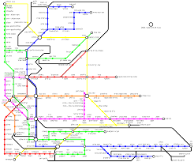

פוטנציאל מול מציאות: מדוע השימוש ברכבת הקלה לא עומד בתחזיות?
סיכום שנת הפעילות הראשונה לדנקל
כבר קצת יותר משנה שהרכבת הקלה פועלת בגוש דן, וזה הזמן לבדוק כיצד היא משרתת אותנו. איך היא שינתה את דפוסי הנסיעה שלנו? האם השתפרה מהירות הנסיעה? האם היא יעילה יותר מאוטובוס ואמצעי תחבורה אחרים? מה בה עובד טוב, ומה דווקא צריך לשפר? ולמה היא לא עומדת בנתוני השימוש שצפינו? הדוח מציע כמה סיבות אפשריות, וכמה הצעות לשיפור... כל הנתונים כאן לפניכם.
הדוח מקיף ומתבסס על מספר מקורות מידע, ביניהם מערכת הנתונים של 15 דקות בשיתוף יישומון "הופאון רב-פס", נתוני מסלקה של משרד התחבורה, נתוני זמן אמת (SIRI), ניתוח ערוץ הטלגרם של "תבל", בדיקות מדגמיות בשטח ודיווחי נוסעים.
1. יוממות ותיקופים לפי שעות
באילו שעות מתקפים יותר בכל תחנה? באילו פחות? ומה ניתן ללמוד מכך על היוממות בגוש דן? בחרו תחנה מהרשימה למטה כדי לראות את התפלגות התיקופים לפי שעות היום.
בחר תחנה מהרשימה למעלה כדי לראות את הנתונים.
התפלגות תיקופים לפי שעות היום:
בתחנות הקצה של הקווים, בין חצי לשני שליש מהתיקופים הם בבוקר.
בתל אביב, עד חצי מתיקופים הם בערב - מגמת שימוש אופיינית ליוממות בגוש דן, כאשר אנשים מתקפים את הנסיעה ונוסעים ממקום העבודה חזרה לביתם.
גם תחנות שנקר ושחם בפתח תקווה מייצגות מגמה דומה לזו בתל אביב, בשל הימצאות מוקד תעסוקה גדול באזור. תחנות עם אחוז תיקופים גבוה בבוקר משרתות בעיקר אזורי מגורים, או שמדובר בתחנת החלפה כמו בקריית אריה (שבה יש גם תחנת רכבת כבדה).
בתחנות אלנבי ובלומפילד יש את האחוז הגבוה ביותר של תיקופים בשעות המאוחרות (לילה): אלנבי - אזור בילויים, בלומפילד - לאחר משחקי כדורגל.
ניתוח מבוסס על יותר משני מיליון תיקופים דרך אפליקצית הופאון מתחילת הפעלת הרק"ל, מנורמל לאחוז שימוש באפליקציה בתחנה.
2. מהירות הקו האדום - לפי מקטעים
בדקנו את מהירות הקו האדום לשני הכיוונים בכל שעות היום. המהירות הממוצעת לאורך כל הקו היא כ-20 קמ"ש. בחרו מקטע מהרשימה למטה כדי לראות את נתוני המהירות הממוצעת בו.
בחר מקטע מהרשימה למעלה כדי לראות את נתוני המהירות.

מה קורה כשמשווים את המהירות בין המקטעים השונים?
במקטעים העיליים בערים בת ים ויפו, המהירות היא 14-16 קמ“ש (מעט נמוכה יותר ממהירות ממוצעת של אוטובוס בגוש דן). בהתחשב בנתונים אלו, לא מפתיע שהשימוש ברק״ל בבת ים נמוך יותר - פשוט יותר משתלם לקחת אוטובוס.
במקטע התת קרקעי המהירות היא 25-35 קמ“ש. מבין כלי התח“צ העירוניים, רק קו 4 של המטרונית בחיפה משתווה למהירות זו, בזכות העובדה שחלק משמעותי ממנו עובר במנהרות הכרמל.
במקטע העילי בעיר פתח תקווה, המהירות היא 15-19 קמ“ש, כמו ברק“ל בירושלים (18 קמ“ש).
חישוב מהירות מבוסס על נתוני זמן אמת ממשרד התחבורה (SIRI), מאי עד ספטמבר 2024.
3. קישוריות הקו האדום לאמצעי תחבורה ציבורית נוספים
רק כ-10% מהנוסעים ברק"ל מבצעים החלפה ונסעו לפני כן באוטובוס או ברכבת ישראל.
יש צורך באמצעי תחבורה ציבורית מזינים לקו, שיוכלו לקשר ביעילות בין אזורים שלא נמצאים על התוואי ובין הרכבת ולאפשר החלפה קלילה.
בגני תקווה למשל יש את קו 75 החדש, שנוצר במטרה להסיע את התושבים לתחנת הרק״ל הקרובה. הקו הוא תוצאה של הצלחת שאטל ביוזמת העירייה שהוכיח את הביקוש לקו. העירייה היא זו שלקחה אחריות על התחב״צ בעיר, יצרה קו לתושבים, ובעקבות ההצלחה המסחררת, במשרד התחבורה לא יכלו להישאר אדישים, והקצו קו ייעודי.

4. שימוש VS. פוטנציאל ביקוש
במפה זו מוצג אחוז הביקוש לעומת התחזיות, ברמת אזורים ושכונות. ניתן להסיק מאילו אזורים קל להגיע לרכבת הקלה, ומאילו מסובך יותר.
- מרבית האנשים ברדיוס של 500 מ' מתחנה מגיעים ברגל.
- מעטים מגיעים ממרחק של יותר מ-5 ק"מ, שם משתלם יותר לקחת קו ישיר.
- הפוטנציאל נמצא בטווח עד 5 ק"מ: מתגוררים כ-1.8 מיליון איש, מתוכם למעלה מ-400,000 משתמשים בתחב"צ.
- יש כמות אדירה של נוסעים פוטנציאליים שלא משתמשים בגלל היעדר קווים מזינים יעילים מאזורים כמו חולון ודרום-מזרח ת"א.
!ניתן להגדיל באופן דרמטי את השימוש באמצעות קווים מזינים או שאטלים ממוקדים ממרכזים ישירות אל תחנת הרק"ל הקרובה!
הביקוש הצפוי מחושב על בסיס כמות אנשים באזורים סטטיסטים ואחוז משתמשים בתחבורה ציבורית לפי מפקד האכלוסין 2022 וכמות מקומות עבודה.
הערכת פוטנציאל השימוש ברכבת הקלה עבורך
ענה על השאלות הבאות כדי לקבל הערכה אישית:
5. השוואה לקווי אוטובוס מקבילים
ניתחנו את השפעת הרק"ל על השימוש בקווי האוטובוס המקבילים במסלולם לקו האדום. הנה השוואה ויזואלית של כמות הנוסעים לקילומטר בין הרכבת הקלה בגוש דן לזו בירושלים:
קבלו נתון מעניין! לקו האדום יש פי 4 יותר משתמשים מאשר לקו 1, שהיה הקו המכין לקו האדום (כ-500 אלף תיקופים בשבוע לעומת כ-120,000).
רבים מהמשתמשים בקו האדום לא השתמשו לפני כן בקו 1 - כלומר הגיעו משתמשים חדשים בזכות תשתית טובה יותר.
קבלו נתון מעניין! אחוז התיקופים ברק"ל בגוש דן עומד על כ-3% מכלל התיקופים הארציים, בעוד שבירושלים הוא 4-5%.
בצלילה לעומק, ברכבת הקלה בירושלים יש כ-30 נוסעים לקילומטר נסיעה, בעוד שבגוש דן יש רק כ-10 נוסעים לקילומטר נסיעה.
כמות משתמשים פר קילומטר נסיעה - על פי כמות תיקופים מול כמות נסיעות מתוכננות ואורך הקווים.
נתוני מסלקה כללית, משרד התחבורה.
6. קולות מהציבור
באופן כללי יש שביעות רצון גבוהה מפעילות הרכבת הקלה, בעיקר בחלק התת קרקעי ובפתח תקווה, ומהתדירות הגבוהה. עם זאת, עלו מספר משובים שחוזרים על עצמם:
- שילוט בתחנה אינו תמיד ברור מספיק.
- אין מקומות ישיבה ברציפי התחנות, בעיה לאוכלוסיה מבוגרת.
- חסר מעבר תת קרקעי בארלוזורוב להחלפה קלה לרכבת ישראל.
- הכניסה לתחנות התת קרקעיות לא תמיד בולטת מספיק, וחסר צג בכניסה המראה זמני הגעה.
- אין נקודה נוספת של ולידטורים בתחנות התת קרקעיות, מה שמצריך לעיתים סיבוב ארוך.
7. סיכום וצפייה לעתיד
הרכבת הקלה חוללה מהפכה ושינתה הרגלי נסיעה. המקטע התת-קרקעי והקו בפתח תקווה מספקים אלטרנטיבה טובה לרכב הפרטי.
יש לשפר את מהירות הנסיעה בחלק העילי בבת ים ויפו - המהירות האיטית משפיעה על נתוני השימוש. יש להעניק לרק"ל עדיפות ברמזורים.
כדי להעלות את רמת השימוש עד שתהיה רשת קווים מלאה, יש לבנות רשת יעילה של קווי אוטובוס מזינים.
הסיבות לשימוש נמוך ביחס לתחזיות: מהירות נמוכה במקטעים מסוימים והיעדר קווים מזינים יעילים. לקו האדום פוטנציאל אדיר שאינו ממומש במלואו.
חווית הנוסע השתפרה לאורך השנה (פחות תקלות, תדירות גבוהה יותר), אך יש לשפר את מנגנון היידוע לציבור בזמן תקלות ושינויים, ולטפל בסוגיות המרכזיות שעלו בדוח זה כמו ספסלים בתחנות, בולטות ונגישות התחנה ועוד.
הקו האדום הוא הישג משמעותי לשיפור התחב"צ בישראל ולשירות חדיש, אמין ויעיל. יש לקדם במהרה את תשתיות הרק"ל בקווים הנוספים וכן את המטרו - הפרויקט הלאומי הגדול ביותר להסעת המונים. כל אלו יביאו עימם בשורה אמיתית וישנו את המציאות התחבורתית בישראל.
